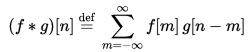
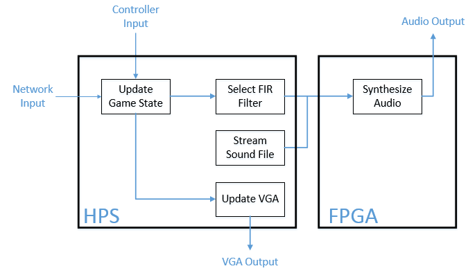
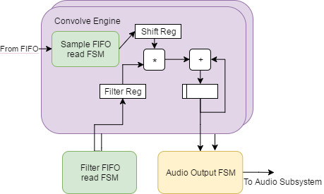
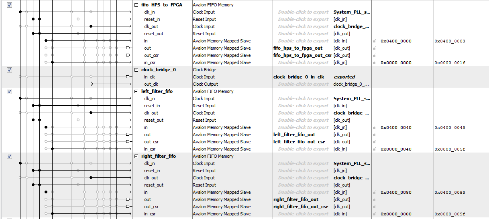
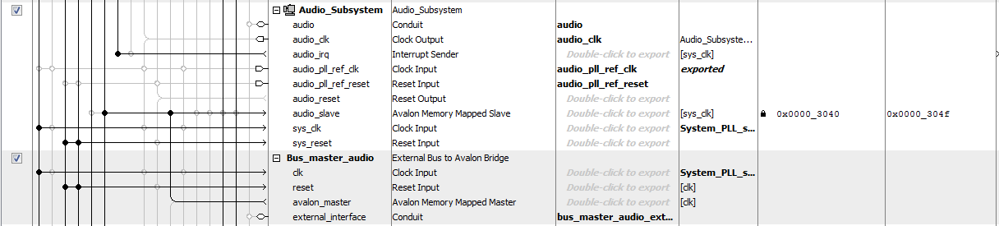
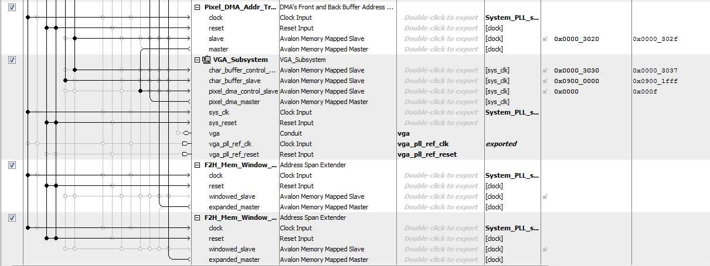
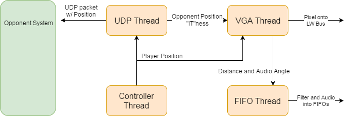

Humans perceive sound in space by processing subtle differences between sound received at each ear. The subtle differences primary stem from the propagation of sound through the head and within our ears cavities (also called the Pinna). We can synthesize sounds that are perceived as coming from a specific location by using HRTF-processing. Head-related transfer functions (HRTF) are functions that characterize how a person receives sound from a source in a three-dimensional space. Providing a HRTF filtered sound to each ear enables the listener to localize the sound relative to their own position. In practice this is can be accomplished by applying a set of HRTF FIR filters to a sound source and feeding separate audio streams to each ear.
We integrate this concept within the framework of Tag to provide the feature of using echolocation as a primary means of locating and avoiding a pursuer. We implemented a game of tag between two players with the twist that the person who isn’t “IT” is unable to see the game state on the VGA monitor. Instead the player must rely on audio cues to escape pursuit. The audio cues are provided as a binaural audio stream to each player’s headphones to simulate the other player’s footsteps. The audio is synthesized in real-time with the FPGA handling audio synthesis computation and the HPS providing the appropriate sound source and FIR filter for the current game state.
The game itself is implemented on the HPS in a multithreaded C program. Each thread is responsible for the various aspects of the game. A VGA update thread is responsible for writing the game state to the VGA for the person who is “IT”. A fifo write thread is responsible for feeding filter and audio values to the FPGA for HRTF calculations for the person who is not “IT”. A UDP thread is responsible for sending and receiving the player’s position, in order to maintain a synched game state. Finally, a controller thread is responsible for polling the USB game controllers for input, and updated the player’s location accordingly.
The VGA handles basic graphical representation of the game state for both players. Because graphics were not the bottleneck of our system, we utilized the HPS to draw to the VGA.
Stemming from Anthony’s interest in integrating game controllers and the group’s overall interest in video games, the initial direction of our project was to build a multiplayer video game. The idea evolved to integrating sound synthesis as a core feature of the video game from an interesting discussion in lecture about head-related transfer functions (HRTF) by Bruce Land. HRTF can be used to synthesize sound perceived from different points in space. Previous projects in the past have demonstrated that HRTF can convincingly synthesize sound from a source in 3D space (. After having researched the topic in the context of video games and audio synthesis in general, we found several additional motivations for pursuing the project related to our personal interests:
Overall the project felt like a good fit for our group in terms of our interests.
The binaural audio synthesis was accomplished by application of a set of HRTF FIR filters on a base sound sample in the time domain. Mathematically the two binaural audio signals are the results of the discrete convolution of a HRTF FIR filter and the footstep sound sample. Discrete convolution is defined as follows

Where f describes the HRTF FIR filter and g the footstep sound samples derived from an .mp3 file.
We chose to represent the HRTF FIR filter and the sound samples in 2.25 fixed point. Because the extent to which a binaural synthesized HRTF-processed sound is effective at conveying sound in space is dependent on subtle differences between what each ear hears, we chose to allocate as many bits as possible within the context of being able to utilize Altera’s DSP IP. Thus we chose to use 27 bits rather than 18 bits to represent the signals.
Although 1.26 fixed point would be preferable to 2.25 fixed point for both capturing accuracy and easy transition for use in the audio codec, the HRTF FIR filter contains values up to magnitude of 1.4 and thus 1 significant bit (other than the sign bit) was required to capture the range between -2 and 2 non-inclusive.
The following figure describes the system level function of our project at each timestep. First the system checks the game controller’s input and network input derived from the actions of the other player to update game state. From the position and angle of each player relative to the other, an appropriate HRTF FIR filter is selected. That filter combined with a continuous stream of footstep audio samples are provided together to the FPGA to synthesize a binaural audio output. Additionally the positional information of game state updates the VGA.

Each part of the system will be discussed in further detail in Hardware and Software Design sections.
The initial work on the project involved creating a functional model in Matlab of the binaural sound synthesis using HRTF to ensure we could produce sound perceived to be at a particular point in space. The Matlab script computes and outputs HRTF-processed sound of an input sound file in various test configurations. The primary test configurations involve testing perception of sound at a fixed distance in 360 degrees around the user in 5 degree intervals and sound dropoff as a function of distance. The commented Matlab script can be found in the appendix. Additionally the Matlab script writes C or Verilog ROM files containing the source sound and the FIR filters for purposes of implementation and testing. Note that for the Matlab script to function requires the CIPIC HRTF library to be included and a set of HRTF filters to be pre-loaded.
Multiplayer games require the system to be real-time. However due to the simple nature of the game requiring minimal computations to evaluate the game state, the rationale was made to implement the entirety of game logic in software to take advantage of Linux’s network capabilities and software libraries for simplicity of implementation. The decrease in performance would likewise be undetectable by players of the video game and thus was a design decision we made for the project.
VGA outputs were also handled on the HPS for simplicity of implementation. This was allowable to trade performance for simplicity of implementation in this case because the VGA graphics were not the critical bottleneck of our system. Should more complicated graphics outside of player position be implemented, we would have moved graphics rendering onto the FPGA.
The most computationally intensive component of the our system is the binaural sound synthesizer which requires discrete convolutions to produce results under deadlines dictated by the Audio Codec output rate of 44.1 kHz. Thus we implemented convolution on the FPGA which also made it easier to output to the audio codec.
One tradeoff we made primarily due to the size of the signal was to stream in audio samples for the base footsteps (game sound) was to pipe samples through the FIFO from the HPS to the FPGA rather than store it in ROM. Although selecting a shorter sample or downsampling were options to enable the base sound samples to be stored on the board, there was merit in streaming the samples in through the FIFO. One reason for streaming audio samples are flexibility to test different sounds without recompiling the FPGA for ease of use. Additionally because the discrete convolution only requires 200 steps (cycles) out of the 1000 allocated in order to maintain the Audio Codec’s output rate, there was no complication in implementation.
The VGA output follows standard VGA format.
The HRTF FIR filters we use are taken from the CIPIC HRTF Database, a public-domain database containing high-spatial-resolution HRTF measurements (description taken directly from the website). That database can be found at http://interface.cipic.ucdavis.edu/sound/hrtf.html. The use of the materials is subject the terms of use of materials section on the provided website link. The HRTF database falls under the following copyright: Copyright (c) 2001 The Regents of the University of California. All Rights Reserved. The same information can be found in the read_me.txt provided in the appendix.

We decided that the most important element of our design to offload to the FPGA was the FIR filter, as the convolution necessary to compute the output was a compute intensive task. Thus, the first step of our design was to design a convolutional engine in Verilog. Our goal for this design was to emulate the equation for discrete convolution, by modeling the signals as values in register arrays. The equation is as follows:
The first part that becomes immediately apparent is that the result at a given timestep is the infinite sum of products of signals. We chose to have the filter as “f” and the signal as “g”, so that the filter would remain static and the signal would be the sliding window. Because the filter is only non-zero for a finite length, we only had to accumulate over the length of the filter. We achieved the accumulation by first routing wires whose values were those of the respective register arrays of the signals indexed by the appropriate counters, and then passing them into a fixed point multiplication module, then adding the output of that module to an accumulation register. Once “m” had reached the length of the filter, the value was ready and was register, and then the next value of the output could be computed. This design, however, posed several problems. First, storing the entire audio sample into a register array simply wasn’t feasible, as the length of the sample was around 30,000, which would not be synthesizable. Our first solution to this problem was to create a ROM block holding all the values, and then load the necessary values into a shift register equal to the length of the filter we were using (our filters ended up being 200 long, so this was quite synthesizable). The shift register provided a welcome improvement over our previous design, as we would load sequentially through the sample from n=0 on, and load into the zero index of the register and shift up, so the shift register ended up acted as the sliding window, and our convolution was now simply index-wise multiplication accumulation. Unfortunately, a 30,000 long 27 bit ROM table was not synthesizable, so we needed another method for storing the audio sample. But more on this later.
Because the Head Related Transfer function requires a separate filter for each ear at each direction, having 360° at 5° increment would require that we store 144 27 bit 200 long filters, or around 100KB of data, which would not fit. To get around this, we decided to take advantage of the large amount of space on the SD card used as the boot drive for the HPS. We did this by creating a 2D array of integers in a C for each channel, created by a matlab script, and then included this in the code we were running on the HPS side. We chose to transfer the filters over on a FIFO connect to the HPS’s lightweight bus, because it would mean that the HPS could communicate with the HPS asynchronously, improving performance and simplifying the design. We used the state machine created by Bruce Land for reading the FIFO, and fed the results into a register to hold the appropriate filter. Thus, the HPS could control what angle was being played out of the speakers simply by throwing the appropriate filter into the FIFO. Because we had two channels, we used two FIFOs to feed the two different filters, the output of each of which were sent to their respective convolutional engines.

As mentioned before, there was not enough space on the FPGA fabric to instantiate a ROM large enough to hold our footstep sample. Thus, we decided to transfer the sample to the FPGA on an adhoc basis in much the same way as the samples, i.e. using a FIFO. However, because the convolutional engines needed the samples on their own time, instead of right away like for the filters, we placed the FIFO state machine inside the convolution engines, and had them both share the output coming in, as they were both operating in lockstep. One engine would request a sample from the FIFO, and then both would read its output. We achieved this with the same module instantiated twice by simply leaving the read request outputs of one instantiation floating.
For audio playback, we reused our Audio Bus master from previous labs. This bus master waits until one convolution engine is ready (and since they are in lockstep this means that both of the engines are ready), and then asks the Audio subsystem if there is room in the audio FIFO before writing the left and then right outputs from the convolve engines into the audio FIFO to be played.

Because the output to the VGA was handled entirely by the HPS, there was no need to a VGA writing state machine on the FPGA. However, we still needed to add a VGA Subsystem to our Qsys in order to allow us to write to the VGA memory. The VGA subsystem accepted character from the HPS through the heavyweight bus and pixels through the lightweight bus (which needed the address span extenders in order to function), outputted the formatted results to the VGA memory.

The decision to use the pthreads to handle the multiple moving parts of the code was for not only ease of implementation but of testing. We have 5 main threads, but each board is only running 4 at any given time. We have a thread that handles writing to fifo, a thread for client communication, a thread for server communication, a thread to update the VGA and a thread to handle receiving input from the USB input controllers.
The fifo writing thread checks to see if there is space in left and right filter fifos and audio fifo. If there is space in any of the fifos, the thread pushes more data from the code to the FPGA with information from the left and right filter arrays and the footsteps array.
Because we needed to make sure that all players have the same information regarding position changes, we used UDP communication to send this data. There are 2 threads that handle communication between the boards. One acts as a server, the other acts as a client. Because the client is the one initiating the connection, we have the client send data first then receive, while the server receives data first then sends it. This helped make a smooth cycle of asynchronously sending data to and from De1-SoC boards.
The server thread starts by creating a socket, followed by binding it to a port whose number is specified earlier in the code. Once the socket has been bound, the thread continuously listens for data to be sent. It starts by trying to receive any data concerning the other player’s position and store it in two variables for the enemy’s X and Y coordinates. Then it would send information concerning your position to the other player. After this it would compute the distance between the two players by put the change in Y values of the enemy and player’s positions over the change in X values of the enemy and player’s position. It then checks to see how close each player is to each other; if the distance between the players falls between the threshold set, then that means the players have touched and whoever was it, has tagged the other player. Once someone becomes it, it clears the VGA screen and resets the positions of the player, showing the map on the VGA screen. If someone is not it, VGA screen will be blank except for the message showing you are not it. In order to be sure that both the server and the client are aware of the fact that this event has occurred, a “debounce” counter was used to wait for several communication cycles after detected a collision before resetting the positions, so that way both devices would be aware of the fact that the collision had occurred.
The client thread works exactly the same as the with a few minor changes. Once the socket has been created, instead of binding it to a port, the client tries to connect to the server. After making the connection to the server, instead of receiving data first, the client sends the data with the player’s position first, then receives the data with the enemy position next. It then checks to see how close a player is to the other, if they’ve been tagged or tagged someone and updates the game state according.
The VGA update thread handles the drawing, redrawing and erasing of player positions on the screen of whichever player is it. It draws discs for both players, each with its own unique color. It then keeps track of ally previous X and Y coordinates before updating their values with the new positions of the players. For the player that is it, after updating the positions thread reaches the end. If the player is not it, then it calculates the velocity angle of the user and the angle between the player who is it and the player is not it. It then scales these values appropriately and uses them to set the direction index which is used to change the direction the player is facing. It then calculates distance using the value from distance_sq which was gotten from the server or client thread. At the end of the thread there is sleep statement for 33 milliseconds which is used to achieve a 30 frames per second screen update, fast enough for seamless gameplay for the players. The VGA write functions were from Bruce Land’s HPS code for the game of life.
Finally is the controller thread, which reads input from the controller device plugged into the De1-SoC board and uses it to update position data of the players. The thread itself simply opens the device for use in the code, sets the flag for non blocking reads for the controller, and checks a switch statement to see which controller reading function to use, the function specific to the NES controller or the PS3 controller.

Testing was performed incrementally with each addition we added to the system. Matlab was used to functionally test HRTF-processing. Modelsim was used to test proper implementation of convolution and to simulate interaction of the FPGA board with components such as FIFOs and the Audio Codec. The transfer of data between the HPS and FPGA though FIFOs was tested through a series of test scripts with FIFO inputs echoed on the terminal and outputs wired to the board’s LEDs. Software was incrementally tested as the script as functionalities were added and integrated.
Overall the project met the real-time requirements of a multiplayer game. The binaural HRTF sound streams were accurate enough to enable players to perceive the location of their pursuers. There were certain cases in which performance of the game was problematic. One unresolved issue was occasional flickering in the VGA display. Another was occasional sort gaps in the audio. The fact that the audio remained functional implies that delayed FIFO writes were the issue rather than having samples dropped (which would result in incorrect sounds being perceived). Thus a potential cause is the bus between the HPS and the FPGA was the bottleneck of our system and the assumption that we could offload several parts of the project to the HPS for ease of implementation does not entirely hold. However with neither player ever having to handle VGA and audio outputs at the same time in our system, the more likely issue is that the context switching costs of threads is causing excess delays affecting performance of our system. Linux does not make deadline guarantees and this may be a consequence of heavily taxing the OS.
In terms of accuracy, the numbers we used for audio were 2.25 fixed-point numbers, which was sufficient for audio playback. To calculate distance between players and angle between them, we cast the integer locations of the players as double precision floating point numbers, to ensure higher accuracy. Interference was not a concern of ours, as our only interaction with the outside world was through UDP packets over the Cornell network, which we were sending to reserved IP addresses, so unless someone had used our reserved IP addresses they would not receive our packets.
The public-domain CIPIC HRTF provides no barrier to reuse of the HRTF FIR Filters for any purpose. However for reproduction and use in commercial products, certain restrictions apply dictated by the Use of Materials terms. Thus as long as one has access to the Altera IP, the project can be recreated in its entirety.
Overall our project met the majority of expectations. The game we created was playable and engaging with audio providing a convincing amount of realism. For instance, players who were being chased audibly and visibly displaying signs of anxiety with the approaching person who was “it”. Our group member Will even yelled “oh god he’s right behind me!”.
Given more time there are several additional aspects of the project we would like to address. For example the lack of a scoring system. We found that although currently the lack of a scoring system may affect replay value, the novelty factor of using audio as a means of physical feedback attracted interest and made the game enjoyable. Additionally we think it would be interesting to implement more advanced game features and render more complicated graphics by integrating that logic into the FPGA framework.
In terms of IP, our project is dependent on Altera’s IP and the public-domain CIPIC HRTF database.
No legal considerations apply this project.
The group approves this report for inclusion on the course website.
The group approves the video for inclusion on the course youtube channel.
Main Game Code
HRTF Fitlers
Footstep Audio Sample
Functional Model of HRTF and File Generator
FPGA Verilog
David
Will
Anthony